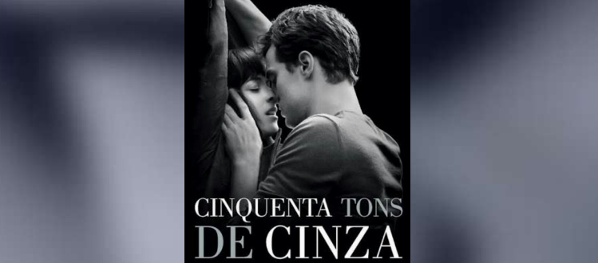
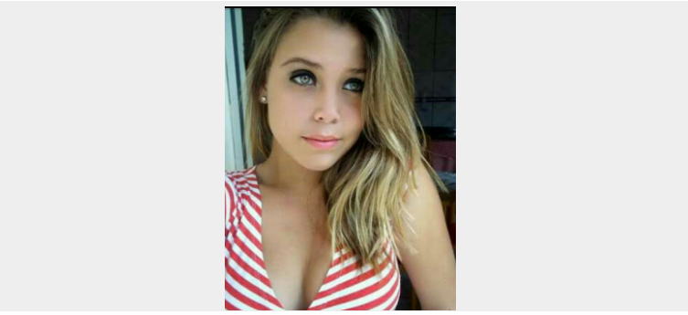

Capítulo 13
A Inocência de Lara

Termina a transa Lívia se despedi e vai pra o outro quarto, ele fica pensando o quanto foi bom , ao olhar para o relógio, ver que já era madrugada quatro da manhã e precisava dormir, tomou banho e exausto de tanto sexo, deita e dorme. Eram treze e trinta quando Lara o acorda.
– Jhon acorda, já é uma da tarde.
– Já estou indo.
Fala Jhon com voz sonolenta.
Ainda com a voz trêmula de sono, pede que o espere mais um pouco que iria tomar um banho rápido, Lara diz que tudo bem, ao toma banho, vai ao encontro de Lara que lhe aguardava com o almoço pronto sobre a mesa, ela tinha caprichado, sabia as comidas que Jhon gostava isso facilitou seus dons culinários, além de linda Lara se mostrava dedicada e ótima cozinheira.
Lívia ainda não estava a mesa, acredito que estava mais cansada que Jhon, pois ele teria lhe esgotado de prazer, inumeráveis vezes deixando-a fraca. Lara vai até o quarto de Lívia e o chama para o almoço, Lívia vem ainda de Baby dó e senta do lado oposto da mesa, assim ficando de frente para Jhon, ele a cumprimenta com uma boa tarde fingindo que nada tinha acontecido, da mesmo forma ela o saúda.;
Lara da um beijo em Jhon e pergunta se dormi bem, ele ainda com cara de sono respondo que até demais, Lívia da uma gargalhada, ele fica meio constrangido achando que Lívia poderia falar algo que acontecerá na madrugada daquele dia, Lara pergunta a Lívia por que dos sorrisos, Lívia ainda sorrindo responde.
– Que pergunta Lara, se ele dormiu bem? Jhon quase nem acorda, então acho que dormiu muito bem não foi Jhon?
Lívia contínuo a sorrir.
– É mesmo prima esse dorminhoco só acordou porquê chamei.
Ficaram as duas sorrido, Lívia sorria com ironia e Lara por inocência. Jhon ficou meio sem graça, mais entendeu o que Lívia estava insinuando, terminaram de almoçar, Jhon teria comido muito bem por sinal, motivo de ter comido bem, nem precisa eu falar né?.
Lívia também não passou em baixo comeu muito bem. Jhon percebe que Lívia ao levar o talher a boca estava tremendo, aproveitou o clima de brincadeiras e quis tirar onda com ela também.
– Lívia estou percebendo que está tremendo, o ar-condicionado do seu quarto estava muito forte foi?
E sorriu.
Lívia não soube o que responder só baixou a cabeça e sorriu, Lara inocente totalmente fora do assunto responde por ela.
– Não querido ela não dormiu com o ar ligado, ela dormiu em outro quarto com ventilador.
Lívia meia sem graça e sem saber o que dizer, mas com o ar de risos diz;
– vou pegar as sobremesas.
Lara nem imaginava o que teria acontecido na quela madrugada, que tiveram uma madrugada maravilhosamente inesquecível. Terminaram de apreciar as sobremesas e foram para o shopping assistir o filme 50 tons de cinza.
Lara sentou na ante-penúltima poltrona, Jhon na penúltima e Lívia na última.
O filme começa e Jhon percebe Lívia muito nervosa tença, Lara deita em seu colo e faz carícias em seu peito, Jhon estava amando aquilo.
Acaba o filme e voltam para a casa de Lívia, ele pergunta se teriam gostado do filme, Lara responde que amou, já Lívia diz que não gostou muito porque não estava acompanha, que teria sido melhor se tivesse alguém com quem pudesse trocar carícias, Lara sorriu, Jhon olha para Lívia e fala;
–Acho que você ta muito carente Lívia, precisa de alguém com quem possa trocar carícias.
– Estou mesmo, estou precisando de sexo.
Fala Lívia a sorrir.
– Tenha jeito Lívia.
Diz Lara um pouco envergonhada.
– Besteira Lara, Jhon já é de casa e outra, mais cedo ou mais tarde vocês vão fazer isso, ou vai dizer que não tem vontades Lara ?
– Claro que tenho, qual mulher não teria? mais vai acontecer no tempo certo.
A conversa estava esquentando era o que Jhon queria, Lara pede para mudar de assunto, fala que iria pra casa na segunda, ainda era sábado.
– Que bom.
Diz Jhon a sorrir.
Ele sabia que dava pra deixar Lara com muita vontade de ... vocês sabem o eu quis dizer.
Jhon fala pra Lara que iria pra casa e ela pede para que ele volte a noite pra dormir com elas. É que Lara tinham medo de dormir só com Lívia, ele fala que tudo bem que voltaria para dormir com as duas.
Capítulo 14
Lara decide ter sua primeira vez com Jhon

Jhon chega em casa toma banho, coloca a roupa e vai conversa com seus pais.
- Oi mãe!
- Oi filho!
vai dormir em casa hoje?
- Não mãe!
vou dormir com as meninas, elas estão com medo de dormir a sós e pediram para que eu durma lá, com elas.
Não se importa né pai se eu dormir lá mais essa noite?
- Não filho, divirta-se aproveite a vida, pois, é o que temos de melhor, ta precisando de algo ?
-Não, não pai ta tudo certo.
- Pode ir com o carro não vou usar, se eu precisar eu ligo.
Diz seu Jackson pai de Jhon.
- Ta bom pai obrigado por mais essa vez.
Tchau pai, beijo mãe.
Se despede Jhon de seus pais.
Seus pais lhe desejaram boa sorte.
Sorte?
Ele já estava com ela! Jhon pega o carro e vai para casa de Lívia,
ele teria uma missão, teria que arrancar suspiros de Lara aquela noite, seria sua última chance de está com Lara em seus braços do jeito que ele sempre sonhou. Ele sabia que seria muito difícil, mas quando queria algo, ele sempre conseguia, além do mas, sabia que Lara também tinha vontade de transar, ela teria falado pra ele.
Teria falado que só esperava o momento certo, e Jhon tinha que fazer esse momento ser especial o bastante pra que ela se entregasse totalmente, ele tinha certeza que iria acontecer mais não sabia como e onde seria, afinal quando se trata da pessoa a quem seu coração pulsa fortemente lhe somem as ideias.
Ele se ver como uma criança, sem ideia e sem malícia, mas queria muito a virgindade de Lara e sabia que se não fosse naquela noite demoraria bastante para que acontecesse novamente. Uma oportunidade dessa era única.
Chegando na casa de Lívia Jhon toca a campainha e Lívia vem lhe receber, abre a porta lhe da um beijo na boca, isso mesmo na boca.
Lívia diz que Lara estava no banho e que estava morrendo de vontade, o beija novamente, e fala que queria repetir tudo que rolou na noite passada, Jhon da um sorriso sarcástico, e diz que se tiverem oportunidade ficaria novamente, ele a queria também.
Lívia era muito gata e sabia fazer gostoso, não dava pra dispensar. Ela sorrir pra ele e diz;
- Vai da sim, eu sei que vai da pra gente ficar bem gostoso como ontem.
Jhon entra e senta no sofá, Lívia liga a TV por assinatura e de propósito coloca em um canal de filme para adultos.
- Você é maluca Lívia, tira logo daí maluca.
Se Lara aparece vai se ligar em tudo.
- Ela ainda está no banho.
Diz Lívia a sorrir.
Jhon sabia que ela tinha feito de propósito pra que ficasse mais doido, mais do que já estava.
" Que menina maluca."
pensou Jhon consigo mesmo.
Lívia muda de canal e coloca em um filme normal de ação.
Depois de quinze minutos Lara aparece, linda como sempre com um short verde cintura alta, blusa xadrez com um decote, aquilo provocava desejos em Jhon vontades imagináveis.
Lara vem até Jhon e lhe da um beijo, ela estava diferente ,estranha em suas atitudes, estava bem fora do normal, ela se comportava diferente, mas não diferente no sentido ruim, ela deixava Jhon perceber que estava querendo, que estava muito afim.
Jhon pergunta se poderia sair naquela noite, ela diz que sim.
- Posso saber pra onde o senhor quer me levar?
Pergunta Lara, com um olhar de sedução.
- Não posso falar é surpresa.
Jhon sorrir pra ele querendo lhe passar provocações.
- Quero ti levar pra um lugar especial, lugar que amo ir sozinho, é lá que faço minhas canções e que amo estar.
- Um, vejo que é especial mesmo, não ousaria a me recusar, mas que lugar encantador é esse ?
- Já que é surpresa sei que você vai amar.
Diz Jhon, sabendo que Lara iria amar o local.
Jhon olha para o céu e fica encantado, já era por volta das oito horas da noite, o céu estava lindo muitas estrelas e uma lua cheia enorme, cenário perfeito pra o lugar onde levaria Lara. Ele abre a porta do carro para que Lara entre, e vai em direção a praia, ao chegar na praia, Lara fica encantada com o que estava vendo.
Há natureza lhes favorecia em todos os sentidos, o mar estava no limite mínimo, totalmente seco fazendo com que sua paisagem ficasse ainda mais bela, e com o toque especial da lua cheia, aquele cenário encantava cada vez mais.
Desceram do carro ela lhe da um abraço apertado e o beija, seus beijos eram muito provocante, cada beijo que ela dava vinha em seus lábios um convite pra que Jhon a tomasse, naquele instante, ela olha em seus olhos e diz que o ama, nunca teria falado que o amava, por mais que ele percebesse, jamais teria falado e naquele instante ela abre seu coração e diz que o ama.
Jhon a beijo loucamente mais suave afim de deixar Lara excitada mais do que já estava.
Lara olha para Jhon e diz que sua primeira vez será na quela noite.